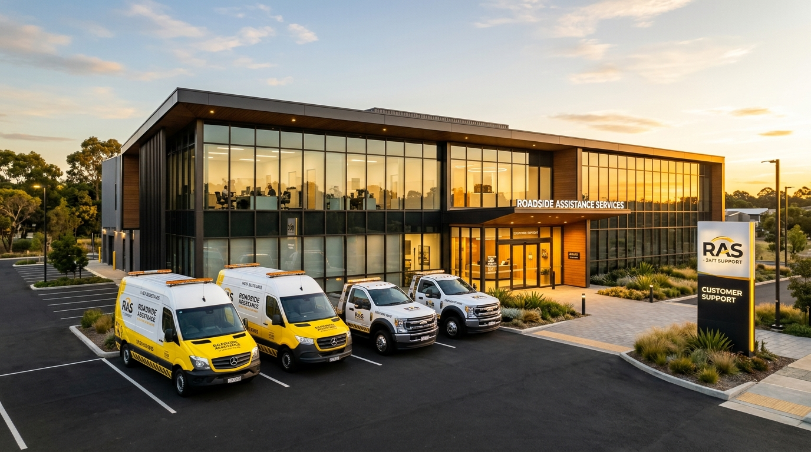
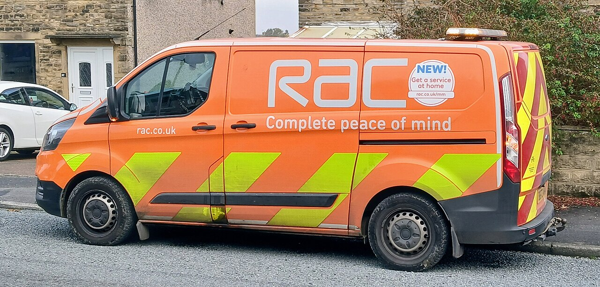
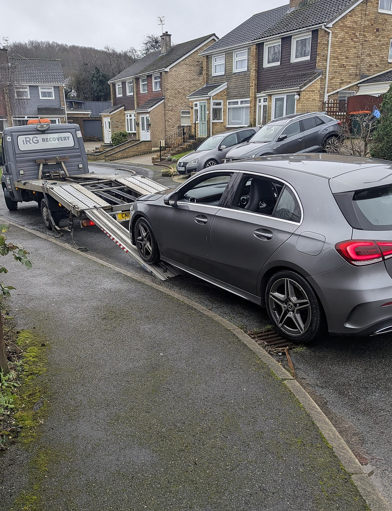

Safety comes first
Choose a safe place away from traffic when possible. Contact local emergency services if anyone is injured or in immediate danger.
Dedicated Roadside & Towing Network
RoadRescue is built to provide rapid, dependable roadside assistance and towing support when you need it most. We combine professional fleet dispatch with transparent guidance, ensuring drivers and businesses stay safe on every journey.

The idea behind the experience
A roadside problem can leave drivers unsure what to do next. This demo shows how a support website can make key information easier to find, explain common service options, and help people prepare useful details before contacting a provider.

What guides the work
Choose a safe place away from traffic when possible. Contact local emergency services if anyone is injured or in immediate danger.
Before authorizing work, ask what service is proposed, when help may arrive, where a vehicle will go, and what the quote includes.
The right option depends on the vehicle condition, location, access, equipment, and whether an on-site fix is practical.

For drivers and businesses
The service directory in this demo covers common roadside requests, towing, vehicle transport, and fleet-related topics. For real assistance, confirm that a local provider can handle your vehicle, load, location, and destination.
Be ready to contact a provider
Keep these basics handy when asking about roadside help. Share only what is needed with a provider you trust.
Road name, direction of travel, nearby exit or landmark, and a location pin if available.
Make, model, color, what happened, whether it can move, and any visible damage or access limits.
Tell the provider if you have a preferred destination and ask about timing, availability, and the complete estimate.
About the RoadRescue website
No. This is a front-end website demo. Its forms and example contact information do not connect to a dispatcher or arrange a service visit.
If anyone is injured or in immediate danger, contact local emergency services. Otherwise, contact a roadside provider directly and confirm availability for your exact location and vehicle.
No. Coverage and pricing examples are placeholders for the template. Confirm current service limits, fees, and terms directly with a provider before agreeing to work.
Share your location, vehicle type and condition, access constraints, passenger or cargo needs, and preferred destination. Ask what the estimate includes before authorizing service.
The demo covers common topics such as towing, vehicle recovery, roadside assistance, heavy-duty requests, and fleet coordination. The examples explain the kinds of details a driver may want to discuss with a local provider.
No. The forms and prices are examples only and do not send a request to a provider. For an estimate, contact a local towing company and confirm the service, destination, timing, and total charges before authorizing work.
Yes. A business can replace the sample contact details, coverage information, service descriptions, pricing, and forms with accurate content and connect the forms to its own customer service workflow.
Describe the problem and vehicle condition to a local provider. They can advise whether an on-site service may be suitable or whether the vehicle should be transported. If the vehicle is unsafe to drive, do not continue driving it.
If it is safe to do so, move away from traffic and follow local road-safety guidance. Use hazard lights when appropriate, and contact emergency services if anyone is injured or in immediate danger.
Confirm the pickup and drop-off locations, expected timing, service details, and the complete estimate, including any additional fees. Ask the provider to explain anything that is unclear before authorizing the work.